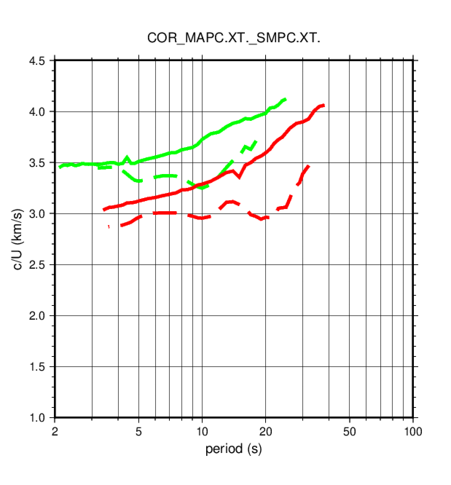
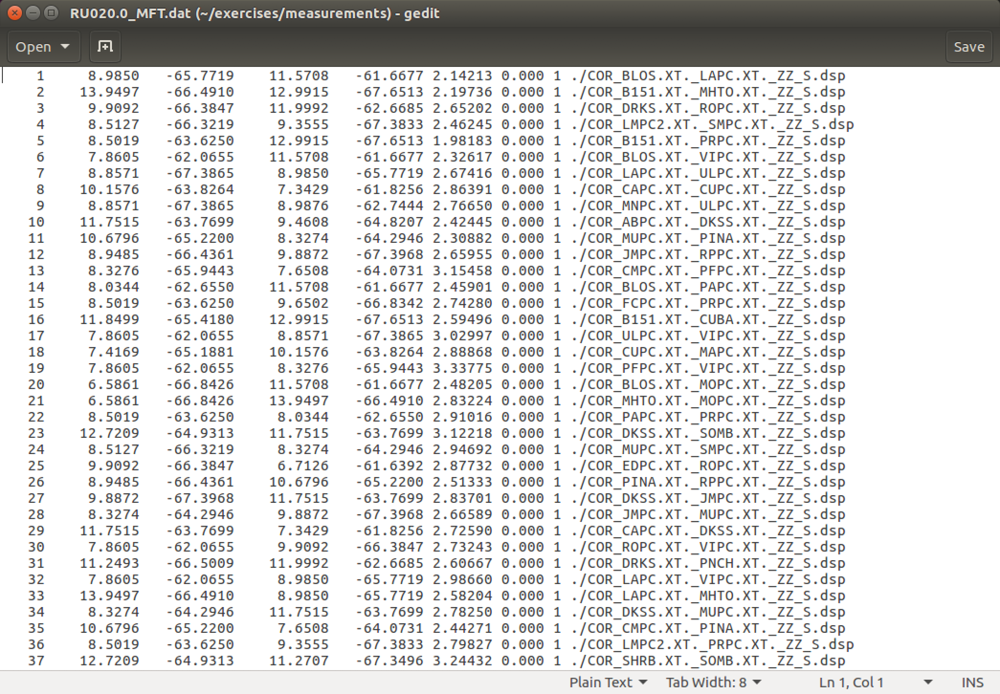
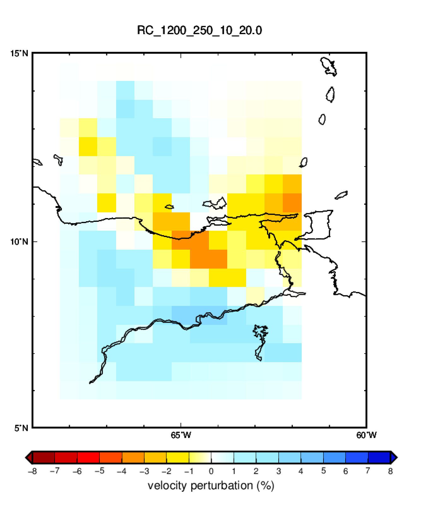

4. Tomografía 2D de ondas superficiales
Para este ejercicio utilizaremos unas medidas de dispersión (velocidad de grupo y de fase de ondas Love y Rayleigh) obtenidas a partir de correlaciones de ruido ambiente entre estaciones localizadas en el oriente de Venezuela.
4.1. Visualizar las medidas de dispersión
Ir al directorio donde se encuentran los archivos con las medidas de dispersión.
Son medidas hechas manualmente con do_mft y por tanto consisten en archivos con extensión
.dsp para las medidad de velocidad de grupo, y .phv para las medidas de velocidad
de fase:
$ cd
$ cd exercises/measurements
$ ls
Podréis observar que hay correlaciones ZZ que contienen medidas de dispersión de ondas
Rayleigh y correlaciones TT que contienen medidas de dispersion de ondas Love.
En primer lugar podemos dibujar las medidas de dispersión obtenidas a partir de las correlaciones entre dos pares de estaciones. Por ejemplo, para dibujar las medidas de dispersión de las correlaciones entre las estaciones MACP y SMPC introducir:
$ plot_aftan_disp.sh COR_MAPC.XT._SMPC.XT.
Esto genera un archivo PostScript que se puede visualizar haciendo:
$ gv COR_MAPC.XT._SMPC.XT..ps
Se debería obtener una figura como esta:

Las líneas verdes corresponden a las ondas Love y las rojas a las ondas Rayleigh. Las líneas continuas son velocidades de fase y las discontinuas velocidades de grupo.
Dibujar las medidas de dispersión para varios pares de estaciones y analizar si muestran el comportamiento esperado (velocidades de fase siempre crecientes y mayores que las velocidades de grupo, etc.)
4.2. Preparar los datos para la tomografía
De los archivos .dsp y .phv conteniendo medidas de dispersión para trayectorias entre estaciones,
hemos de pasar a archivos que contengan velocidades de grupo y de fase para un solo periodo.
Concretamente para cada periodo deberemos obtener 4 archivos: RC, RU, LC, LU.
Esta reorganización de los datos la lleva a cabo el script get_mftdsp.sh que se encuentra
el directorio /home/seismo/scripts. Ir a esa directorio, editar el script con gedit e intentar
entender la secuencia de comandos.
Para ejecutar el script, volver al directorio donde se encuentran las medidas de dispersión:
$ cd
$ cd exercises/measurements
$ get_mftdsp.sh
Este script genera varios archivos con la extensión .dat, uno para cada tipo de medida (grupo o fase),
tipo de onda (Love o Rayleigh) y para cada periodo. El contenido del archivo RU020.0_MFT.dat debe ser
similar a:

El significado de las columnas más relevantes es:
- número de la medida
- latitud de la primera estación (fuente)
- longitud de la primera estación (fuente)
- latitud de la segunda estación (receptor)
- longitud de la segunda estación (receptor)
- velocidad (km/s). Para el archivo
RU020.0_MFT.datcorresponderá a la velocidad de grupo de la onda Rayleigh a 20 segundos - archivo del que procede esta medida
Es posible saber el número de medidas en cada archivo contando el número de líneas:
$ wc -l *.dat
4.2. Surface wave tomography (2D)
Una vez generados los archivos .dat para cada periodo y tipo de velocidad y de onda,
ya estamos en condiciones de hacer la tomografía 2D.
Para ello ir al directorio de trabajo:
$ cd
$ cd exercises/tomography/RC020.0
En este directorio se encuentran varios archivos:
RC020.0.dat: archivo con las medidas de dispersión (Rayleigh, fase, 20 segundos)contour.ctr: archivo que define la zona geográfica a invertirtomo.sh: script debashpara correr el programa de tomografíaplot_map.sh: script debashpara dibujar los resultados8%_panoply.cpt: paleta de colores para dibujar los resultados
Editar el archivo tomo.sh para ver los pasos requeridos para llevar a cabo la
inversión tomográfica. Para ejecutarlo escribir simplemente:
$ tomo.sh
Al terminar la ejecución el script escribe en pantalla un número que es el
promedio de todas las medidas de velocidad en el archivo .dat. En este caso
debería ser 3.36.
Si el programa corre correctamente, deberá generar varios archivos con el prefijo
RC_1200_250_10_20.0. El significado de los números (sus valores están especificados
dentro del script tomo.sh) es:
- : 1200 (sin dimensiones)
- : 250 km
- : 10 (sin dimensiones)
- periodo: 20 segundos
El archivo con la extensión .1 contiene el mapa resultante
de la tomografía.
Para dibujar el resultado (mapa de velocidad de fase de ondas Rayleigh a 20 segundos)
correr el script de dibujo y visualizar el archivo PostScript resultante con gv:
$ plot_map.sh RC_1200_250_10_20.0.1
$ gv RC_1200_250_10_20.0.ps

Editar el archivo y cambiar los valores de los parámetros y y dibujar los resultados.